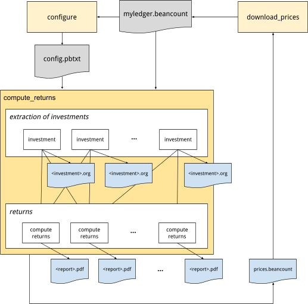
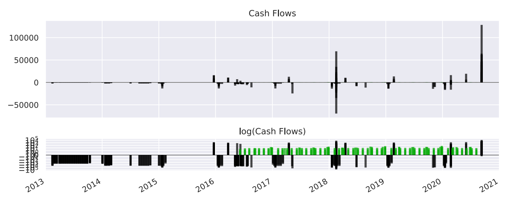
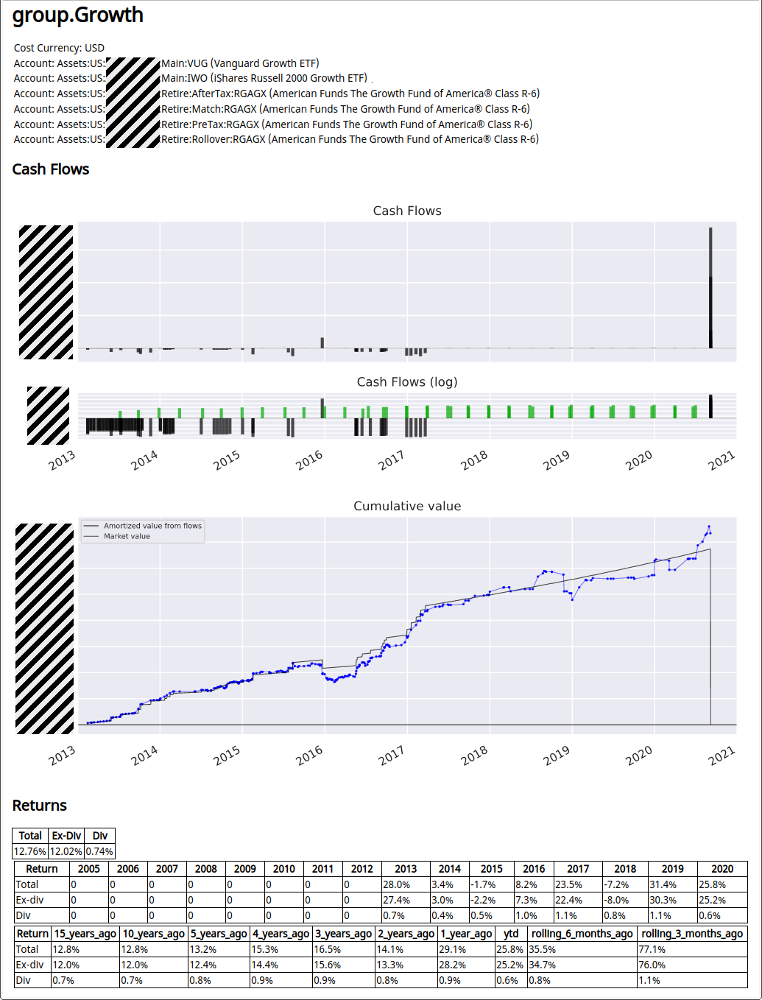

非官方中文译文 · 术语保留英文；代码、account、option、币种原样。 原文：https://beancount.github.io/docs/calculating_portolio_returns/
计算 Portfolio Returns
面向 intermediate → advanced 读者
原文：Martin Blais，2020 年 9 月
来源：Calculating Portfolio Returns
翻译原则：中文为主；transaction、posting、directive、account、balance assertion、tolerance、precision、interpolation、cost、price、lot、booking、pad等术语保留英文。cash flow、investment、report、signature、handler、root finding、IRR、market value、cost basis等实现相关术语也保留英文，以免在代码和报表之间来回翻译时失真。版本提示：本文写于 2020 年，代码路径指向 Beancount v2 时代的
experiments/returns。现在这套代码已经独立为 beangrow。阅读时请以 beangrow 当前仓库为准；文中的compute_returns.py、configure.py、download_prices.py仍有助于理解方法，但具体参数和路径可能已经变化。
译者导读
这篇不是“如何记账”的教程，而是一篇实现记录：如何从 Beancount ledger 中提取 cash flows，再用 IRR/root finding 计算真实的 portfolio returns。
核心方法可以压缩成四步：
- 为每个
(instrument, account)组合定义一个 investment； - 从 ledger 中提取与该 investment 相关的 transactions；
- 把 transactions 归类成 signature，再转换成
(Date, Amount, IsDividend)形式的 cash flows； - 用 cash flows 解 IRR，并按区间截断，得到 lifetime、calendar、cumulative returns。
真正困难的部分不是 IRR，而是数据提取：account 命名是否一致、transaction templates 是否稳定、price 是否足够新、dividends 是否被正确标记。作者花了大部分篇幅讲这些“脏活”，这也是本文对高级读者最有价值的地方。
译者注 · IRR 不是 TWR
文中用的是 IRR（money-weighted return），它受现金流时点影响。若你要和基金、指数做严格比较，通常还需要 TWR（time-weighted return）。两者回答的问题不同：IRR 回答“我的钱实际赚了多少”，TWR 回答“策略本身表现如何”。不要混用。
本文说明如何从 Beancount ledger 计算 portfolio returns。
动机
你可能会意外地发现，折扣券商通常不会基于你的实际 cash flows，给出准确、完整的 investment returns 计算。它们往往报告的是另外一些 performance 指标：
-
Change in value. 最简单的是账户在期初和期末（或年初/年末）的价值快照。问题在于，它没有把现金的注入或取出、以及持仓变化反映进去。例如，年初账户有 $50,000，8 月又投入 $30,000，12 月底报告差额 $37,000，这并没有什么用（你得在脑子里扣除年内新增投入的现金；而且如果你想拆开比较账户内不同 instrument 的 returns 呢？）。
-
Underlying performance. 它们可能单独报告底层资产本身的增长，而不考虑你的具体持仓。如果你只（或主要）在下半年才投入，那么“HDV 过去一年涨了 8.2%”对你没什么用。我想知道的是：在我具体的持仓变化和时点下，我的投资到底增长了多少。换句话说，我 做得怎么样？
-
No dividends. 另一个问题是，performance 通常只报告价格变化带来的资本增值。理想情况下，你会希望把 performance 拆成资本增值、dividends，以及各自对总 returns 的贡献，这样才能比较股票和债券的 returns。有时 summary 里的 Yield 字段能提供一些信息，但对于不均匀的分布，它无法告诉我在任意区间内实际拿到了多少 dividend returns。
-
Commissions and management expenses. 有些券商会按月按账户价值收取管理费。我想知道扣除这些费用后的 portfolio return 是多少。
我想要基于我实际 cash flows 和持仓变化、准确反映时点的 returns 报告。
如果我把投资信息维护在 Beancount ledger 里，理论上它包含了我计算真实 returns 所需的全部数据：我的储蓄（cash infusions）的具体时点，以及我在各个时点持有哪些 positions。只是它并不是计算所需的最简格式——Beancount transactions 比你可能希望的更灵活，需要从中提取出一组更简单的 cash flows。本文解释我最终如何从自己的 Ledger 做到这一点，以及如何基于一些简单规则推广到你的账本。大部分文字都花在提取正确数据的繁琐细节上。
源码在 beangrow。
此外，基于同样的 cash flows，应该可以对其他投资情景做公平、诚实的比较。例如，你应该能生成这样的数据：“我在 ZZZ 的投资回报为 8.2%，其中 1.1% 来自 dividends；如果我投资的是 60/40 的广泛股票/债券组合，回报会是 7.2%。”换句话说，我想把 performance 与若干常见替代方案做相对评估。
（最后说明：如果你只需要当前 positions 的快照，export script 已经能处理。）
历史
2014 年，我做过一次简短尝试，想从 ledger 中拆解出这些信息。当时我很快陷入细节：有些提取出的 time series 结果看起来不合理（有些离群值）。我太快钻进了细节。有时候更好的做法是先把整个任务做完，再回头处理细节。我当时没有记录足够的 debug 信息，也对输出没有足够信心去使用它。那次工作最终没有完成，脚本被移到 experiments，我也就耸耸肩：“以后再说。”
2020 年 8 月，我重新坐下来做这件事，这次目标没那么宏大：先得到一个好的近似，并产生大量 debug 输出；把提取过程简化为只抽取 cash flows，并让所有 accounts 都能跑完，即使这意味着要对输入文件做一些调整。结果证明这是对的：我完成了任务，本文记录了我的过程、方法、假设、怪癖和一些结果。
方法概览
我将使用的方法，是为每个 investment 提取 cash flow 信息。这里的 investment 指的是某种 financial instrument，例如 Vanguard Total Stock Market ETF 的 VTI 股份，投资于某个特定 account，例如某个 Vanguard 401k。cash flow 列表是一组带日期的正/负货币金额，表示投入该 investment 或从中取出的资金。因此，每个 account 有一组 cash flows，而每个 account 只记录一个 financial instrument。
报告时，我会把这些 per-account series 按逻辑单位 reports 分组，例如把同一 instrument 在不同 accounts/券商的记录合并，或把代表同一底层资产的不同 instruments 的 cash flows 合并；甚至按“策略”分组。基本上，通过合并多个 accounts 的 cash flows，我就有了一种通用方式，可以对任意 account 子集分组并计算 returns。
有了 cash flows 后，我会运行一个简单的 root finding routine，计算这些 flows 需要以多高的平均年增长率增长，才能达到最终 market value。这给出整体 returns。它类似于计算 Internal Rate of Return（IRR）。我会对整条 time series 计算，也会对子区间计算，例如 calendar returns（每年或每季度）或 trailing periods 的 cumulative returns。由于 cash flows 标记了是否为 dividends，我可以把 returns 拆成价格增值和 dividends 两部分。每个 group 都会生成带图的报告。
下图展示了 configure、compute_returns 和 download_prices 三个脚本如何协作：

下面会进一步说明。
配置
首先需要创建一个 configuration，定义 investments 列表及其 groups，并为这些 groups 生成 reports。configuration 是文本格式的 protocol buffer message。
-
Investment. 一个 investment 对应某个 account 中的某个 instrument。它还涉及其他不直接涉及该 account 的 transactions。我们需要提供几组 account 名称：
-
Asset account. 持有该 investment commodities 的 account 名称。
- Matching accounts. 额外 account 列表；只要 transaction 有 posting 到这些 accounts，就会被选中。
-
Cash accounts. investment 外部的 accounts，用于标记流入/流出 investment 的现金。
-
Report. 虽然可以按单个 investment 计算 returns，但更通用、更有用的是按 investments group 计算。一个 report 就是一个 investment 名称列表。每个 report 会生成一个 PDF 文件。
下面是一个包含 6 个 investments 和 3 个 reports 的例子：
investments {
# Accounts at BTrade.
investment {
currency: "GLD"
asset_account: "Assets:US:BTrade:GLD"
cash_accounts: "Assets:US:BTrade:Cash"
}
investment {
currency: "AMZN"
asset_account: "Assets:US:BTrade:AMZN"
cash_accounts: "Assets:US:BTrade:Cash"
}
investment {
currency: "QQQ"
asset_account: "Assets:US:BTrade:QQQ"
dividend_accounts: "Income:US:BTrade:QQQ:Dividend"
cash_accounts: "Assets:US:BTrade:Cash"
}
# Accounts at IBKR.
investment {
currency: "IAU"
asset_account: "Assets:US:IBKR:IAU"
cash_accounts: "Assets:US:IBKR:Cash"
}
investment {
currency: "SLV"
asset_account: "Assets:US:IBKR:SLV"
cash_accounts: "Assets:US:IBKR:Cash"
}
# Accounts at Schwab.
investment {
currency: "GOOG"
asset_account: "Assets:US:Schwab:GOOG"
cash_accounts: "Assets:US:Schwab:Cash"
cash_accounts: "Assets:AccountsReceivable"
cash_accounts: "Assets:US:GoogleInc:GSURefund"
}
}
groups {
group {
name: "strategy.gold"
investment: "Assets:US:BTrade:GLD"
investment: "Assets:US:IBKR:IAU"
}
group {
name: "strategy.tech"
investment: "Assets:US:BTrade:QQQ"
investment: "Assets:US:BTrade:FB"
investment: "Assets:US:Schwab:GOOG"
}
group {
name: "all"
investment: "Assets:US:*"
currency: "USD"
}
group {
name: "accounts.BTrade"
investment: "Assets:US:BTrade:*"
currency: "USD"
}
}
不同 reports 可以包含同一个 investment。configuration 中对 accounts 和 investment 名称的引用支持简单的 UNIX-style globbing patterns。运行时它们会展开为完整 account 名称，并存储在输出中。
configure.py 脚本可以从现有 Beancount ledger 自动推断一个可用的基础 configuration。每个唯一 instrument 都会生成 report；export script 认可的 metadata 字段（assetcls、strategy）也会生成 reports。我建议你先在自己的 ledger 上运行它，然后手工定制 configuration。
寻找 Accounts
这个脚本需要找出可报告的 investments 列表。按照惯例，我会为每种 commodity 保留一对专用 leaf accounts：一个持有实际 positions（assets），一个接收 dividends。例如，对于券商 BTrade 中持有的 VTI：
2012-03-01 open Assets:US:BTrade:VTI VTI
2012-03-01 open Income:US:BTrade:VTI:Dividend USD
这有两个好处：(a) 很容易找出包含 investments 的 accounts（任何 leaf account 名称也是 ledger 中出现的 commodity 的 account）；(b) 通过找出所有 posting 到该 account 的 transactions，可以很好地隔离与该 investment 相关的全部活动。我建议你在自己的 chart of accounts 中遵循同样的惯例。 结果是一个 account 列表，例如 Assets:US:BTrade:VTI，针对每个 (instrument, institution) 组合。
我进一步筛选出过去 15 年仍然 open 的 accounts（我用 Beancount 的 Close directive 在账户结束时关闭它们）。就我而言，那时候没有多少储蓄，没必要为了那么久远的零碎记录做归一化工作。
提取 Cash Flow 数据
本节描述我从 ledger 提取相关数据所采取的步骤。
提取相关 Transactions
对于每个识别出的 asset account，我们要从 ledger 的 transactions 中提取影响该 account 的 transaction 列表。我们遍历整个 ledger 的 transactions，保留至少有一个 posting 到该 investment 的 asset account、dividend income accounts，或配置中定义的其他 match accounts 的 transactions。
例如，现金 dividend 支付的 transaction 不会有 asset posting；典型的 dividend payment 只包含 dividend income posting 和 cash posting（存款）：
2019-11-27 * "Dividend"
Income:US:BTrade:VTI:Dividend -123.45 USD
Assets:US:BTrade:Cash 123.45 USD
因此，必须在 configuration 中包含 dividend account，才能纳入这些 transactions，因为它们通常不涉及 asset account。
Account 分类
下一步是把 transactions 泛化为 templates：记录每个 investment 提取出的 transactions 涉及的全部 accounts，并根据它们在 transaction 中的角色分配到通用类别。例如，查看我的 VTI 交易，会遇到这些 accounts：
Assets:US:BTrade:Cash
Assets:US:BTrade:VTI
Expenses:Financial:Commissions
Income:US:BTrade:VTI:Dividend
我把每个 account 映射到若干通用类别之一（现在可能可以简化）：
ASSET # The account holding the commodity.
CASH # Cash accounts, employer matches, contributions.
DIVIDEND # Dividend income account.
EXPENSES # Commissions, fees and other expenses.
INCOME # Non-dividend income, P/L, gains, or other.
OTHERASSET # Other assets than the primary asset for this investment.
OTHER # Any other account.
像这样：
'Assets:US:BTrade:Cash': CASH
'Assets:US:BTrade:VTI': ASSET
'Expenses:Financial:Commissions': EXPENSES
'Income:US:BTrade:VTI:Dividend': DIVIDEND
这样，我就可以跨 instruments 比较相似 transactions，并用同一套代码提取信息。例如，涉及 dividend account 和 cash account 的 transaction 就是现金 dividend 支付，我可以写一个通用 handler 来提取 cash flows。分类最初是用一组 ad-hoc 规则做原型，现在由 configuration 提供分类。
注意：在这个过程中，我注意到自己 account 命名有很多不一致。例如，有时用 :Dividend，有时用 :Dividends。我检查了 ledger，做了一些修改，让 account 命名一致，并反复迭代，直到所有 accounts 都被正确分类。你可能也需要 review 一些数据录入。
用 Signature 处理 Transactions
使用上一节的 account-category mappings，我可以为每笔 transaction 推导出一个唯一的 signature。例如：
2020-03-12 * "(DOI) ORDINARY DIVIDEND"
Income:US:BTrade:VTI:Dividend -1312.31 USD
Assets:US:BTrade:Cash 1312.31 USD
的 signature 是：
CASH_DIVIDEND
希望它总是 dividend payment。Beancount 语法相当灵活，并不强制 transactions 遵循这种模板，所以项目开始时我并不清楚，在 12 年 ad-hoc 数据录入的 ledger 中会发现哪些模式……我不确定这种分类和 signatures 是否足以正确处理 cash flow 转换。因此我让脚本生成两套 debug 文件：
-
Investment details. 每个 investment 一个文件，列出提取出的所有 transactions，并标注每个 posting 推断出的分类，以及遇到的所有 accounts 的 categorization map。我人工检查这些文件，确保 configuration 中的 account/patterns 提取了完整且正确的 transaction 集合。
-
Signature transactions. 每个唯一 signature 一个文件，列出跨所有 investments 匹配该 signature 的完整 transactions 列表。通过检查这些文件，我确认同一 signature 的所有 transactions 确实扮演相同角色，因此每个 signature 一个 handler 就足够。
此时，我得到一个有限的 unique signatures 列表，每个都有清晰唯一的角色：
ASSET_CASH : Purchase or sale
ASSET_CASH_EXPENSES : Purchase or sale with commission
ASSET_CASH_INCOME : Purchase or sale with profit
ASSET_CASH_INCOME_EXPENSES : Purchase or sale with commission and profit
ASSET_EXPENSES : Fee paid from liquidation
ASSET_INCOME : Cost basis adjustment (with P/L)
ASSET_INCOME_EXPENSES : Fee from liquidation (with P/L)
ASSET : Stock splits
ASSET_DIVIDEND : Dividend reinvested
CASH_DIVIDEND : Dividend payment
CASH_INCOME_DIVIDEND : Dividend payment and gains distribution
ASSET_OTHERASSET : Exchange of stock/symbol
…
注意，具体列表取决于你 ledger 的内容；你应该检查生成的文件是否正确。
然后我为每个 signature 写了特定 handler，生成对应的 cash flows，并单独推理每种情况。这样我就能为每个 investment 正确生成完整的 cash flow 列表。
注意：实践中我还遇到 3、4 种比较特殊的 signature；通过修 ledger，我修正了它们，或把它们拆成等价但更简单的 transactions。特别是一个 importer 把同一天发生的多笔交易合并在一起，我回头修了 importer，并手工修正了那些 transactions。
ASSET_OTHERASSET这个 signature 尤其是股票互换（Google -> GOOG, GOOGL）。这样做会暴露你记账技巧中的一些 idiosyncrasies。保持一致、使用更少的 templates 是有帮助的。一个有价值的方向是配一个 plugin，把可能的 templates 限制在少数几种，从而约束数据录入，使其能很好地配合这套 returns 生产代码。
泛化 Cash Flow 的生成
检查完每个 signature handler 后，我尝试把它们泛化为一个统一的 handler，适用于所有 transactions。结果发现，至少对我现有 ledger 的 transactions 来说，这是可行的。
本质上，记录流入/流出 cash accounts 或其他 assets 就足够了。例如：
2013-09-18 * "Buy shares of HOOL"
Assets:US:BTrade:Cash -818.55 USD
flow: CASH
Assets:US:BTrade:HOOL 8 HOOL {101.20 USD}
flow: ASSET
Expenses:Financial:Commissions 8.95 USD
flow: EXPENSES
CASH posting 是一笔足够的 incoming cash flow，所以我们记录 -818.55 USD。在现金 dividend 支付中：
2013-12-17 * "Cash Dividend payment"
Assets:US:BTrade:Cash 38.50 USD
flow: CASH
Income:US:BTrade:HOOL:Dividends -38.50 USD
flow: DIVIDEND
同样，38.50 是一笔足够的 outgoing cash flow，所以我们记录 +38.50 USD。另一方面，reinvested asset dividend（某些共同基金会有）不会产生任何 cash flow；它只是留在 investment 内，增加总价值：
2013-12-30 * "Reinvested dividend"
Assets:US:BTrade:HOOL 0.356 {103.41} USD
flow: ASSET
Income:US:BTrade:HOOL:Dividends -36.81 USD
flow: DIVIDEND
这条规则似乎足以正确处理我 ledger 的全部内容。
最终，我实现了两种方法：用通用规则生成 cash flow 列表，同时调用显式 handlers，并交叉检查提取出的 cash flows 是否完全一致，以确保正确。这由 compute_returns.py 的一个 flag 开启（--check-explicit-flows）。这会迫使我确保已经分析了所有可能的 transaction templates。
注意：如果你在使用脚本时发现自己的 ledger 中有无法通过一组 cash accounts 处理的情况，请在 mailing-list 上告诉我。
cash flow
上一节的 handlers 为每笔 transaction 生成一个 cash flow 列表；对 account 来说，合起来本质上是一个列表：
(Date, Amount, IsDividend)
现在这是一个更简单的模型。每个 account 现在有一条排序好的、带日期的 cash flow series。注意 Amount 包含它的 cost currency（我有 USD 和 CAD），IsDividend 是一个 flag，标识该 cash flow 是否为 dividend payment（用于计算不含 dividends 的 returns）。这些 cash flow series 可以很容易地在 accounts 之间合并，并通过在区间起点/终点插入对应 market value 的 initial/final cash flows 来截断。渲染出来可能像这样（由于 scale 的关系，log 渲染能显示细节；dividends 用绿色）：

注意，由于很多 transactions 不产生 cash flows，单靠一个 investment 的 cash flow 列表不足以计算该 investment 随时间的价值。截断某个时间区间时，investment 的 market value 是用 transaction 列表推导出来的。
最后，每个报告 group 的 cash flows 可以通过拼接轻松合并。
计算 Returns
计算平均增长率
对于每条 cash flow series，先把 cash flows 合并。我使用 scipy.optimize.fsolve 计算满足 net present value 的 rate：
cfi/(1 + r)ti = 0
其中 cfi 是带符号的 cash flow 金额，ti 是每笔 cash flow 距今天的时间（年）。我们求解 r。要计算不含 dividends 的 returns，只需排除 dividend 产生的 cash flows。差额告诉我们，returns 中有多少完全来自 dividend income。
重要的是：如果对应 positions 仍在投资中，你必须在最新日期插入一笔最终负 cash flow，金额为 market value，使其归零。你本质上是在模拟卖出。如果会有显著的 transaction costs，也可以模拟（例如，如果你是在为房子做这件事）。
美妙之处在于：整个过程中没有使用底层价格，除了把当前 position 按 market value 标记。我们没有读取任何外部 returns 指标。这些 returns 完全由 cash going in and coming out 计算。它们是 actual realized returns。它们不会说谎。
Intervals. 要计算 calendar returns，例如 2016、2017、2018、2019、2020 年的 returns，我会把 cash flows 截断到区间内，例如 2018-01-01 到 2018-12-31；如果区间开始时已有 position，就在 series 开头插入一笔负 cash flow，金额等于该日期的 market value。区间末尾同理，插入一笔正 cash flow，如前所述。
理想情况下，我想看不同的 interval 集合：
-
Lifetime of investment. 整个 positions 生命周期的 total returns，归结为一个数字。
-
Calendar. 过去 10 或 15 年的年度或季度 returns，观察 returns 随时间的变化。
-
Cumulative. 过去 10 或 15 年的 cumulative returns，按 calendar periods 对齐，判断情况是在改善还是恶化，以及我的 strategies 在近期（例如过去 3 年）表现如何。
-
High frequency cumulative. 过去 12 个月的 cumulative returns，按月或按周对齐，评估短期决策的影响。
这些可以用表格渲染，investments 之间也可以这样比较。
补齐缺失的 Price Points
计算不同区间的 returns，需要在区间起止日期把 positions 按 market value 标记。Beancount 设计上是 hermetic 的，即不外部抓取价格，只使用 ledger 中的内容；它的 price database lookup 会自动给出请求日期之前最近可用的 price point 及其记录日期。取决于你的记录纪律，有些价格可能过时，带来不准确。尤其重要的是，期末换算金额（用于估算当前 positions 价值）可能很大，会显著影响甚至 lifetime returns 数字。
因此，ledger 的 price database 中需要有相对新鲜的价格点。现在的问题是：给定随时间变化的 positions 和一组 interval dates，需要哪些 price entries 才能产生准确结果？
因为这高度依赖 returns script 的具体输入，为了解决这个问题，我简单地在 price database 外包了一层 facade，在生成 reports 的过程中收集所有请求换算的 (instrument, date) pairs，然后按某个 age threshold 过滤（例如价格不能旧于 3 天）。这些本质上就是文件中缺失的 price points。
脚本结束时，我把这些输出到一个包含 Price directives 的文件；另一个程序（download_prices.py）可以读取该文件并抓取历史价格。它会产生更新后的 rates，你可以一次性粘贴到 ledger 文件，然后重新计算更准确的 returns。从 Yahoo! Finance 拉数据对我 90% 的 positions 有效，但一些较老的 instruments 已经太旧、退市或不可得（例如一些退休基金），所以我只能浏览并手工录入一些 price points（大概 30 个……没什么大不了的）。
Rolling windows. 一个重要点是：以后把 reporting intervals 对齐到某个 calendar-based interval（例如按月）会更容易，这样不必每次生成 returns 都重新生成价格数据。按月对齐对我的时间跨度来说大概足够。
Stock Splits. Beancount 不会显式调整拆股后的价格，所以如果你的价格源记录的是拆股前价格，应该返回拆股前的价格。你可以用 Fava 检查 price time series 是否有错误。
译者注 · 最大的误差源
这套方法对 price freshness 非常敏感。lifetime returns 看起来“精确”，但如果期末 market value 用的是几个月前的 price，数字可能明显偏离。实践上，先把 price database 的新鲜度做好，再谈 returns 的精度。
货币换算
另一个重要细节是，每个 investment 有自己的 quote currency。我以前住在加拿大，一些较早的 investments 以 CAD 计价。于是问题来了：我应该用本地货币（CAD）计算 returns，还是用参考货币（USD）？
方便的是，Beancount 的 Inventory 对象有函数可以轻松完成所需换算。由于提取出的 cash flows 用 Beancount 的 Amount 对象存储，我的提取数据集中已经正确保留了 quote currencies。在任何一个 group 中，如果所有 instruments 的 quote currency 相同，我就用该货币报告 returns；如果 group 混合了多种 quote currencies，我就进一步全部换算成 USD（因此得到 USD returns）。
报告
对 Accounts 分组
Returns 是按 configuration 中定义的每个 report 内的每组 accounts 联合计算的。以下是一些合理的 grouping 示例：
-
Same instrument in different accounts. 同一股票在不同 accounts 买入，联合报告该股票的 returns 是合理的。
-
Same underlying. 有些 instruments 代表同一股票，例如 GOOG 和 GOOGL（不同 share class，同一公司）。IAU 和 GLD（黄金）是不同的 ETFs，但价值都来自实物黄金储备（存放在伦敦银行金库）。
-
Same asset class. 同一资产类别的 instruments，例如 “metals” 包括 IAU、GLD、SLV、COPX 等；“REITs” 包括 VNQ、VGSLX 等；或 “all stocks” vs “all bonds”。
-
By Strategy. 在我的 portfolio investment 方法中，我采用 multi-headed approach：定义具体的 broad strategies，然后选择一组 instruments 来实现它。
-
例如，我有一个 “tech sector” strategy，包含 FAANG 公司。
- 或 “growth stock” strategy，可能包含 VUG、IWO、RGAGX 等不同 indexes。我可以跨券商报告这些 strategies 的表现。
-
或按地域，“developed APAC”，包括 EWY、EWT、EWS、EWA。
-
By Broker. 我可以按券商或券商 account 报告 returns。这尤其可以按税务处理方式分离已实现利润（例如 401k 是 tax-deferred）。
-
Asset type. 比较所有 index funds 和所有 managed funds（例如 mutual funds）。
注意，不同 reports 可以包含相同 investments。Groupings 不是互斥的。你根据自身情况定义最有意义的组合。作为参考，我用了 20 多个 reporting groups。
运行代码
只需调用：
./experiments/returns/compute_returns.py <file.beancount> <config.pbtxt> <output-dir>
生成所有 reports 和 debug 文件，其中 <config.pbtxt> 是 “Configuration” 一节所示的格式。它有点慢——性能还有改进空间——但如果你在最后一个参数后提供 report 名称列表，就只会处理那些 investments 和 reports，迭代会更快。用 --help 查看 flags，configuration 输入文档见 config.proto。
渲染结果
对于每个 reporting group，我目前会生成：
-
一张 cash flows over time 图，以及一张更小的 log(cash flows) 图。dividend payments 通常被本金的 cash flows 淹没，所以 log 图能让我看清 timing。它主要用于概览随时间的活动和 debug。
-
一张 cumulative value 图，包含两条曲线：
-
Cumulative cash flows，附带一条与我回归出的 returns 匹配的增长曲线。结果应该是一条在 cash flows 之间平缓上升的线（对应 total returns 增长），最后下降到零。
-
Market value over time：portfolio 按市值计价的曲线。这让我能通过观察资产价值随价格的变化，理解 calendar returns。
-
一张 total returns 表，包含不含 dividends 的 returns，以及仅来自 dividends 的 returns。
-
一张每年的 calendar returns 表，也按 total、ex-dividends、dividends-only 拆分。（以后可能会渲染成图。）
-
一张 trailing cumulative returns 表。
这些会随着我继续开发而细化和扩展 [2020 年 9 月]。
示例
下面是一个 example report，针对一组以 “growth” 为重点、分散在不同券商的 accounts。每个 reporting group 我都会生成一张。（为隐私灰掉了一些部分。）

解释时的坑
有几点需要注意：
所有 rates 都是 annualized。 这让数字之间容易比较，但也意味着短期持有的 positions 会产生不适合长期外推的数字。特别是几个月前才建立的新 positions，可能经历高增长或大幅下跌，外推到整年可能显示惊人的百分比。看近期新增 positions 时尤其要记住这一点。
Taxes 没有计入。 应税账户和 tax-deferred 账户的 returns 应该区别评估；如果税差很大，不能直接比较。记住，大多数国家的 gains 只在 realization（卖出）时征税，所以实际上长期持有的 investments 行为或多或少像 tax-deferred。不要卖太多。这是持有广泛分散 ETFs 的一大优势（而且通常未被量化，因为人们的注意力还过度集中在 registered accounts（例如 401k）的好处上）。
Cost basis. 注意，我们的计算中完全没有使用或计入 cost basis，所以不要把它和 market value 混淆。Cost basis 只对税务相关影响有用。
其他 Instrument 类型
注意，这种计算 returns 的方式并不限于股票和债券。用同样的方法，我们可以纳入其他类型的 instruments：
P2P 借贷
在对冲基金进场捡低垂果实之前，我用过 LendingClub；后来让我投资的那些 bonds 全部到期。用同样的方法计算这些 investments 的 returns 很容易。最初，我有纪律地根据每月 PDF statement 记录这个 investment，使用这样的 transactions：
2016-10-31 * "2016-10-31.Monthly_Statement.pdf"
Assets:US:LendingClub:FundsLent -451.52 LENCLUB {1 USD}
Assets:US:LendingClub:Cash 451.52 USD
Income:US:LendingClub:LoanInterest -21.68 USD
Income:US:LendingClub:Recoveries -5.92 USD
Expenses:Financial:Fees 1.08 USD ;; Recovery fees
Expenses:Financial:Fees 4.71 USD ;; Service fees
Expenses:Financial:Fees 0.45 USD ;; Collection fees
Assets:US:LendingClub:Cash
Assets:US:LendingClub:FundsLent -23.05 LENCLUB {1 USD}
Income:US:LendingClub:ChargedOff 23.05 USD
后来，在 principal bonds 到期后，transactions 变成这样：
2018-11-30 * "2018-11-30.Monthly_Statement.pdf"
Income:US:LendingClub:Recoveries -2.73 USD
Expenses:Financial:Fees 0.49 USD ;; Recovery fees
Assets:US:LendingClub:Cash
计算 returns 只需要这个 investment configuration：
investment {
currency: "LENCLUB"
asset_account: "Assets:US:LendingClub:FundsLent"
match_accounts: "Income:US:LendingClub:Recoveries"
cash_accounts: "Assets:US:LendingClub:Cash"
}
注意，match_accounts 配置是必要的，用来捕捉后期只有 recoveries、没有 asset account posting 的零碎 transactions。值得一提的是，这个 investment 我算出了 6.75% 的 return。嗯。
房地产
可以从房子的所有 transactions 中提取 cash flows，因此可以计算投入房子的所有资金的 returns，就好像纯粹是为了投资。
通常买房是出于其他原因——给孩子稳定、能自己改造、定期还本的强制储蓄，以及常常只是“有个家”的感觉——但在绝大多数情况下，房屋所有权更像成本中心，把钱投到别处 returns 会更好（见 这本书，对利弊有很好的揭露）。就我个人而言，我有比修马桶、担心冬天窗户漏水更重要的事，所以又回去租房了；但我经历过一次，很值得，既是学习经历，也体验了“拥有自己地方”的“快乐”。通过这套 exercise，可以算出拥有房子实际花了你多少钱，以及把同样的 cash flows 投入市场可能赚多少。
这稍微复杂一些，因为：
- 你必须自律地把“如果租房就不会有的”费用分离到房屋专用 accounts。
- 你需要计入因为住在房子里而不用支付的等效租金。
- 如果你仍拥有房子，必须通过插入一笔 transaction 来模拟可观的 agent fee 和其他 closing costs。
- 很多地方卖房有巨大的 tax break（有时是全部资本增值），这真的需要计入。计算并不总是简单，尤其如果你在持有期内出租过一部分，那时可能只能扣除部分 capital gains。
- 对一些人来说，能低成本、轻松搬家的 optionality 有很大价值（例如接受全国另一边的新工作），这种个人价值很难估算。
这需要我做更多分类工作，最好作为单独项目记录，虽然使用同一套代码。我确实做了一个简单 configuration，并从中提取出大约 5% 的数字，但我觉得还需要一点工作才能宣布胜利。后续再说。
期权
我有时用长期 OTM PUT positions 对冲部分 portfolio 下行风险。近期我也会卖出 OTM PUTs 和 CALLs 来融资。本文描述的股票方法同样适用于 options，也就是从 cash 中提取 cash flows。
主要区别是：
-
Currency names. Instrument 名称是每个 contract 特有的——包含 expiration date 和 strike price——所以我不会把 options 存到 leaf account 名称包含 instrument 名称的 account。我只用通用 leaf account 名称，例如
Options或Hedging，在建立/退出 positions 时选择它。 -
Prices for options. Options 价格不容易通过程序抓取。我不得不用私有 API。也许更重要的是，theta 衰减、vol 变化和接近 strike 时的非线性，意味着我确实需要 ledger 中有相当新的价格估计，才能计算 unrealized gains/losses 的 returns。我觉得影响足够强，最终会想要一些代码，在生成 reports 前总是更新价格。
后续工作
本节描述我希望对 returns 代码做的未来改进（我很可能会实现），以及相应的挑战。
注意：2020 年 9 月写这篇文章时，我正在积极开发这套代码，接下来几个月的周末可能还会继续。本文可能稍微过时，下面一些 proposal 可能已经实现。最新情况请参考源码。
相对规模随时间变化
另一个可以轻松加入 reports 的有用数据，是 market values over time 的 stack plot，以及每个 report group 中各个 investment 的相对比例。这对监控 group 中特定 instruments 的增长、辅助 rebalancing 很有用。
与基准比较
运行自己 portfolio 的一个重要成功晴雨表，是与一个等价的、定期 rebalance 的广泛股票/债券简单 portfolio 比较。毕竟，如果我的 returns 在正常环境下跑不赢它，那就可以说我没必要搞更复杂的 allocation。
假设我获取 capital 的能力相同（确实相同，因为这个项目看的是来自收入的储蓄），我可以简单地把自己的 cash flows 替换成流入这个模拟 portfolio 的 cash flows，也就是用同样的 timing 模拟买入其他资产。我必须排除 dividend payments，因为它们是特定 instruments 特有的；同时，从 benchmark portfolio 中相似规模的 positions 生成模拟 dividends。
应该可以在不修改 ledger 的情况下做到。一个问题是，我需要 benchmark 在我历史 cash flow 日期上的一组准确价格。就像脚本已经处理 aging price points 那样，这可以轻松存到文件里供抓取。
也许更复杂的是，Beancount 目前不支持 per-share dividend distributions 数据库。可以在不引入新语法的情况下，通过 Price directives 上附加并识别 metadata 来加入，例如：
2020-09-01 price LQD 136.16 USD
distribution: 0.295 USD
总体而言，实现起来不会太难。
计入未投资现金
我在投资自己 portfolio 时面临的一个问题，是缺乏纪律及时投入可用现金，尤其是在时局不确定、决策困难的时候。为了计入这对 performance 的拖累，我应该纳入一个 “investment”，纯粹反映随时间未投入现金的总额。
由于这个数字变化很大，一个好近似是每月采样可投资现金总额，并根据差额合成 cash flows。如果这条 cash flow series 被纳入 portfolio，它会通过稀释适当拖累 returns。
税后价值
目前我用 export script 把所有 holdings 导出到 Google Sheets，然后按长期/短期 positions、pre-tax、after-tax、Roth、taxable 等 buckets 拆分。从这 8 个 aggregates 中，我扣除估算税额，报告一个单一的 “estimated after-tax net worth” 和相应 tax liability。这是粗略估计。
Returns report 则详细得多，我不仅可以模拟 liquidation 时的税款，还可以模拟每年末（来自 dividends 和 sales）的税款。我持有每个 position 的 lot dates，所以可以自动判断 short-term vs long-term lots。
通胀调整
Returns charts 和 calendar returns 中报告的 market value 金额没有考虑 inflation。长时间来看，这会对 returns 产生重要影响。
用年度 CPI 估计（或其他 inflation 估计；你甚至可以根据 ledger 中的 expenses 自己编一个）对 returns 随时间折现会很有用，这样我们可以看 real growth 曲线，而不只是 nominal growth。
卖出佣金
Configuration 可以很容易改进，让用户指定卖出 investments 的预期 commissions，绝对值或相对（%）金额。这用于以更现实的 liquidation values 标记 positions。对金额小或 commissions 大的 investments（例如通过普通券商，或房地产）会有影响。
风险估计与 beta
一个更高级的话题，是根据具体 portfolio composition 估算 variance，从而计算并报告某种风险度量，例如 Sharpe Ratio。这需要足够多、等间隔的 price points。度量随时间的变化也会很有趣，还可以计算当前 portfolio 对整体市场的 specific sensitivity（beta）。
结论
我原本以为可以从 Beancount 数据中生成清晰的 returns 图景；做完之后，我对自己 ledger 能产生的细节和清晰度比预期更满意。这远远超出了单纯绘制 net worth over time；它确实运行得很好，我可以用它公平地比较不同 investments 的 performance。我希望至少有一些 Beancount 用户能在自己的 ledgers 上运行它，也期待听到那些设置好的人的反馈。
也许最重要的是，我对自己 portfolio returns 的结果非常惊讶。我属于那种如果被问到 returns 会耸耸肩、猜一个不起眼的数字的人，比如“嗯，6% 左右吧，不太满意。”做这项工作的最初动力，正是因为我回答不了这个问题。结果发现，过去 15 年，我的平均年回报接近 12%，过去 5 年是 14%。我还没有做 benchmark 比较，当然这些数字应该和市场并排看，才能公平评估。尽管如此，这套 exercise 让我对未来有了新的信心和希望；我也希望它能为其他 Beancount 用户自己的 investments 带来同样启蒙性的清晰度。
译者附：落地检查清单
如果你要把这套方法用到自己的 ledger，按这个顺序排查，能省很多时间：
- Account 命名先统一：每种 instrument 一个 asset account，一个 dividend account；避免
:Dividend/:Dividends混用。 - 先跑
configure.py：让它推断 investment 列表，再手工修正 groups；不要一上来就写完整配置。 - 看 investment details 文件：确认每笔相关 transaction 都被提取，且 posting 分类正确。
- 看 signature 文件：同一 signature 必须只对应一种经济含义；遇到 exotic transaction，先修 ledger，不要急着写 handler。
- 先做 lifetime returns：确认整体数字合理，再做 calendar / cumulative。
- 检查 price freshness：期末 market value 的 price 不能太旧；先补价格，再看 returns。
- 区分 IRR 与 TWR：IRR 是 money-weighted；要和 benchmark 比策略，最好同时算 TWR。
- 不要用 cost basis 代替 market value：cost basis 只影响税务，不参与 returns。
- 短期年化要谨慎：几个月的新 positions 年化后可能非常夸张。
- 先跑小报告：用 report 名称列表缩小范围，迭代配置，再跑全量。
版权与许可：原文 © Martin Blais / beancount/docs contributors，MIT License。中文翻译为非官方 derivative work，仅供个人学习；详见 NOTICE.md。